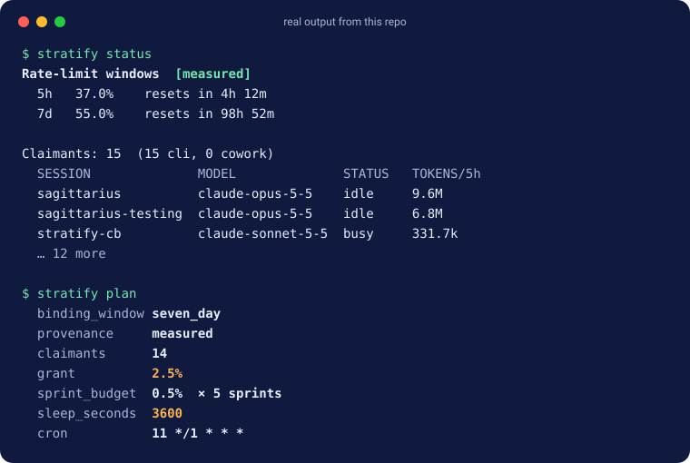

nice,
for your rate limit.
Every Claude session you run draws on one shared window. Stratify tells each session how much of it to take, and when to come back.
$ stratify planOne burst, or many sprints
Left: fourteen sessions all working at once. Right: the same sessions, each on a paced share.

Try the allocator
The same arithmetic the binary runs: floor division on a 1000-weight scale, 90% ceiling, 0.5% minimum sprint, 60 s to 1 h sleeps. Other sessions sit at nice 0.
Nice, but gentler
Same shape as Unix nice, with a 14.9× spread instead of the ~5900× of Linux CFS. A session that yields still makes steady progress; it doesn't stall.
$ stratify claim --nice 10


It says how sure it is
Window usage only exists in the statusline payload, so every plan carries a label. The skill must pass it on, never present a guess as a reading.
A live window, read recently.
A live window read a while ago, or one that just reset.
No current reading. You get one minimum sprint at a slow cadence, never a full grant.
Proved, not promised
The allocator is written in Lean 4 with exact integer arithmetic. These are theorems the compiler checks.
grants_le_budgetgrant_monogrant_possleepFor_boundssprint_schedule_within_grantbudgetOf_rolledOverunknown_is_boundedunknownSleep_monoexpired_not_measuredThree steps
Only the last one touches your settings, and it asks first.
make install
Builds the binary from source with the pinned Lean toolchain.
stratify install-sensor
Prints the statusline change. Modifies nothing until you apply it.
stratify plan
Or ask Claude to work in stratified sprints, and the skill takes over.